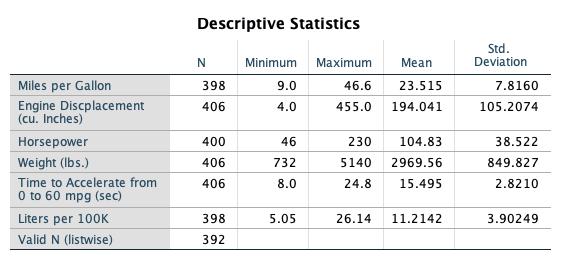
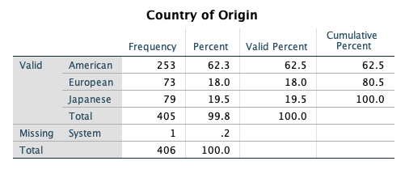
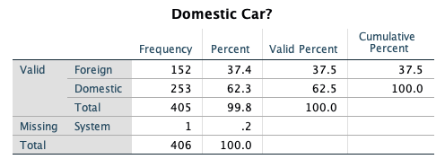
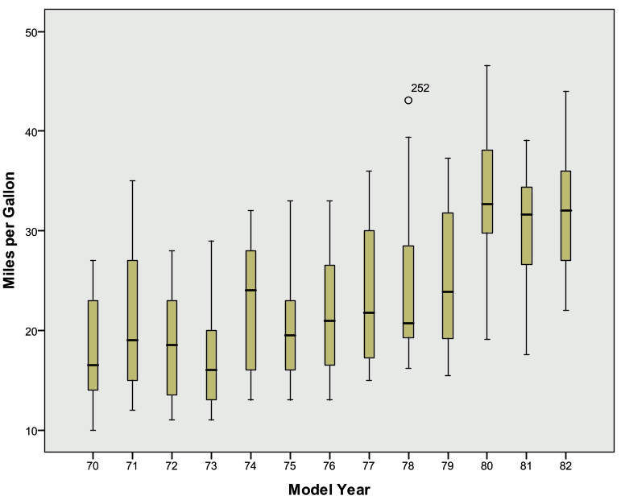
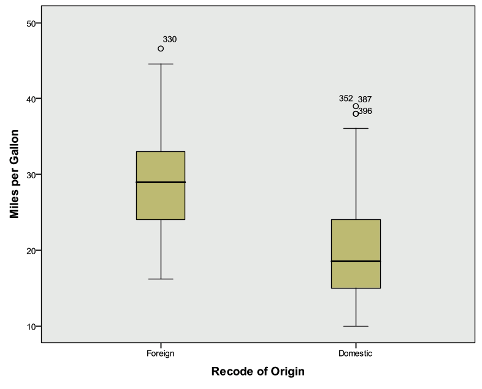

8 Final Project
The Data (Refer to Final Project Folder)
The cars data sets contain data on specifications of 406 vehicles from 1970 to 1982. Among the variables in the data set are information on fuel consumption (mpg), horsepower, weight, acceleration, origin (Europe, Japan, U.S.), and number of cylinders.
The data set contains categorical variables (such as origin), numerical discrete variables (such as number of cylinders), and continuous variables (such as weight, and acceleration).
Getting Started
Investigate cars_wave1.xls and cars_wave2.xls and prepare the data for SPSS
Open SPSS and import cars_wave1.xls and cars_wave2.xls from Microsoft Excel.
Merge cars_wave1 and cars_wave2 (add cases).
Save this new SPSS file!
Using the codebook below, define the proper attributes in Variable View


Working with Variables
Recode Origin such that 1=Domestic, 0=Foreign. Remember to recode into a different variable. Give this new variable the proper attributes in variable view.
Convert Miles Per Gallon (MPG) to Liters Per 100 Kilometers
Use the Compute function
The formula to use: LP100K=(100*3.785)/(1.609*MPG)
Export this SPSS data set to Microsoft Excel (it’s always good to have a back up!). Export all of the variables.
One Variable Procedures
Get descriptive statistics for all scale variables in the data set.
Get frequency tables for all categorical variables (ordinal or nominal) in the data set.
Create a histogram of Horsepower.
Create a histogram of Weight.
Create a QQ Plot for Weight (Analyze Descriptive Statistics QQ Plot Select Weight, leave others as default settings OK)
Create a bar chart for Origin.
Organize the output by Year (Analyzing groups of cases separately, compare groups). Before proceeding, select only cases with Year not = 0.
Investigate Horesepower (descriptive statistics)
Investigate Weight (descriptive statistics)
What do you see?
Remember to turn the Split File command off before proceeding!
Relationship Between Continuous Y (Horsepower) and Continuous X (Weight)
Create a Scatter Plot with Horsepower as the Y variable and Weight as the X variable.
Add a Linear fit line.
What is the relationship between Horsepower and Weight as shown in this graph?
Calculate the Pearson and Spearman Correlation coefficients for the relationship between Horsepower and Vehicle Weight.
What is the p-value for the Pearson correlation?
What is the actual p-value, as opposed to the p-value that is displayed? To display the actual p-value for the Pearson correlation, double-click on the Pearson correlation output table and double-click on the p-value. (Remember, p-values cannot actually be equal to zero. The p-value you will see displayed, after double-clicking, will be in scientific notation.)
Relationship Between Continuous Y and Numerical Discrete/Ordinal X
Before doing any analyses, select only cases with Year not = 0.
Create a side-by-side boxplot of MPG vs. Year. Choose MPG as the “variable” and Year as the “category axis”.
What is the general trend of MPG across years?
Relationship Between Continuous Y and Nominal X
Create a side-by-side boxplot of Miles per gallon vs Country of Origin (ORIGIN). (Note: even though Origin is numeric in the data set, its values are nominal: American, European, Japanese).
What is the general relationship between MPG and the Origin of the car?
Create a side-by-side Boxplot of Miles per gallon vs. the recoded Country of Origin (1=Domestic, 0=Foreign).
Final Steps
Export the SPSS output into Microsoft Excel
Select a few tables and/or charts that you would like to present and paste them into Microsoft Word
8.0.1 Final Project Solution
The Data:
The cars data sets contain data on specifications of 406 vehicles from 1970 to 1982. Among the variables in the data set are information on fuel consumption (mpg), horsepower, weight, acceleration, origin (Europe, Japan, U.S.), and number of cylinders.
The data set contains categorical variables (such as origin), numerical discrete variables (such as number of cylinders), and continuous variables (such as weight, and acceleration).
Getting Started
Investigate cars_wave1.xls and cars_wave2.xls and prepare the data for SPSS
Remove the first couple rows that contain a heading
Remove the last row that contains summary information
Save and exit
Open SPSS and import cars_wave1.xls and cars_wave2.xls from Microsoft Excel.
Open SPSS
File Open Data Select “Excel” under File Type
Browse for the Excel files and select Open
Keep the box checked for “Read variable names from the first row of data”
Leave the worksheet selected as the default
Select OK
Merge cars_wave1 and cars_wave2 (add cases).
Data Merge Files Add Cases
Select the open data file, then select Continue
The Add Cases dialog will appear
There should not be any “unpaired” variables
Select OK
Your active data file should now have 406 cases
Save this data file and close the “non active” file
Save this new SPSS file!
Using the codebook below, define the proper attributes in Variable View
Be sure to include the missing value code for MPG
You only need to modify the measurement type, variable labels, variable values, and missing values.
Working with Variables:
Recode Origin such that 1=Domestic, 0=Foreign. Remember to recode into a different variable. Give this new variable the proper attributes in variable view.
Transform Recode into different variables
Select Country of Origin (ORIGIN)
Name = NewOrigin
Label = Recode of Origin
Select the Change button
Select the Old and New Values button
Old Value: Value: 1
New Value: Value: 1
Select Add
Old Value: Value: 2
New Value: Value: 0
Select Add
Old Value: Value: 3
New Value: Value: 0
Select Add
Old Value: Value: System or User Missing
New Value: Value: System Missing
Select Add
Select Continue
Select OK
Go to Variable View and enter 1=Domestic, 0=Foreign under Values for this new variable. Also adjust the decimal place to 0.
Convert Miles Per Gallon (MPG) to Liters Per 100 Kilometers
Use the Compute function
The formula to use: LP100K=(100*3.785)/(1.609*MPG)
Transform Compute Variable
Target Variable = LP100K
Numerical Expression: (100*3.785)/(1.609*MPG)
Select OK
Go to Variable View and give this variable a label (Liters Per 100 Kilometers)
Export this SPSS data set to Microsoft Excel (it’s always good to have a back up!). Export all of the variables.
File Save As
Change Files of Type to Excel
Give a name and select location to save
Save
One Variable Procedures:
Get descriptive statistics for all scale variables in the data set.
Analyze Descriptive Statistics Descriptives
Select
Mpg
Engine
Horse
Weight
Accel
Lp100k
Select OK

Get frequency tables for all categorical variables (nominal/ordinal) in the data set.
Analyze Descriptive Statistics Frequencies
Select
Year
Origin
Cylinder
NewOrigin
Select OK




Create a histogram of Horsepower.
Graphs Legacy Dialogs Histogram
Variable: Horsepower
Check the box to display normal curve
Select OK
Investigate output

Create a histogram of Weight.
Graphs Legacy Dialogs Histogram
Variable: Weight
Check the box to display normal curve
Select OK
Investigate output

Create a QQ Plot for Weight (to help assess normality)
Analyze Descriptive Statistics QQ Plot
Select Weight, leave others as default settings
Select OK

Create a bar chart for Origin.
Graphs Legacy Dialogs Bar
Simple, summaries for groups of cases
Select Define
Select Origin for the Category Axis
Select OK

Organize the output by Year (Analyzing groups of cases separately, compare groups). Before proceeding, select only cases with Year not = 0.
Investigate Horsepower (descriptive statistics)
Data Select Cases
Select If Condition is Satisfied (select If button)
Enter this condition: year ~= 0
Select Continue
Output: Filter out unselected cases
Select OK
Data Split File
Select Compare Groups
Select Model Year (YEAR) for “Groups Based On”
Select “Sort the file by grouping variable”
Select OK
Analyze Descriptive Statistics Descriptives
Select Horsepower
Select OK

Investigate Weight (descriptive statistics)
Analyze Descriptive Statistics Descriptives
Select Weight
Select OK

What do you see happening in these two variables over time?
- It appears that the average horsepower and average weight are decreasing over time
Remember to turn the Split File command off before proceeding!
Data Split File
Select Reset
Select OK
Relationship Between Continuous Y (Horsepower) and Continuous X (Weight):
Create a Scatter Plot with Horsepower as the Y variable and Weight as the X variable.
Add a Linear fit line.
Graphs Legacy Dialog Scatter/Dot
Simple Scatter
Select Define
Y Axis: Horsepower
X Axis: Weight
Select OK
Double click on the chart in the Output Viewer to open Chart Editor
Select “Add Fit Line at Total” Button (lowest row, 5th object inward)
The defaults are sufficient, so close out of the “Add Fit Line at Total” dialog
Close out of chart editor

What is the relationship between Horsepower and Weight as shown in this graph?
- There is a strong positive linear relationship
Calculate the Pearson and Spearman Correlation coefficients for the relationship between Horsepower and Vehicle Weight.
What is the p-value for the Pearson correlation?
Analyze Correlate Bivariate
Select Horsepower and Weight
Select Ok
The pvalue is listed as .000
What is the actual p-value, as opposed to the p-value that is displayed? To display the actual p-value for the Pearson correlation, double-click on the Pearson correlation output table and double-click on the p-value. (Remember, p-values cannot actually be equal to zero. The p-value you will see displayed, after double-clicking, will be in scientific notation.)
- 1.18068E-120
Relationship Between Continuous Y and Numerical Discrete/Ordinal X:
Before doing any analyses, select only cases with Year not = 0.
Data Select Cases
Select If Condition is Satisfied (select If button)
Enter this condition: year ~= 0
Select Continue
Output: Filter out unselected cases
Select OK
Create a side-by-side boxplot of MPG vs. Year. Choose MPG as the “variable” and Year as the “category axis”.
Graphs Legacy Dialogs Boxplot
Simple, Summaries for groups of cases
Select Define
Variable: MPG
Category Axis: Year
Select OK

What is the general trend of MPG across years?
- The median MPG appears to increase over time
Relationship Between Continuous Y and Nominal X:
Create a side-by-side boxplot of Miles per gallon vs. Country of Origin (ORIGIN). (Note: even though Origin is numeric in the data set, its values are nominal: American, European, and Japanese).
Graphs Legacy Dialogs Boxplot
Simple, Summaries for groups of cases
Select Define
Variable: MPG
Category Axis: ORIGIN
Select OK

What is the general relationship between MPG and the Origin of the car?
- The median MPG appears to be larger for European and Japanese cars when compared to American cars
Create a side-by-side Boxplot of Miles per gallon vs. the recoded Country of Origin (1=Domestic, 0=Foreign).
Graphs Legacy Dialogs Boxplot
Simple, Summaries for groups of cases
Select Define
Variable: MPG
Category Axis: RecodeOrigin
Select OK

Create a correlation matrix and scatter plot matrix for Horsepower, Weight, and Year. How strongly are these variables correlated?
Graphs Legacy Dialogs Scatter/Dot
Matrix Scatter
Define
Select Horsepower, Weight, Year under Matrix Variables
Select OK